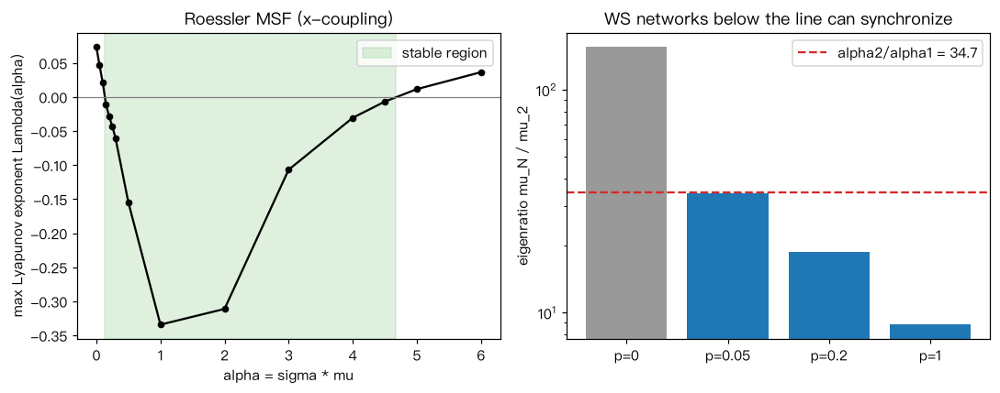

Example06 / 11
数值计算 Rössler 振子的主稳定函数并判断网络可同步性
节点动力学为 Rössler 系统（a=b=0.2, c=7），耦合只通过 x 分量（H(x,y,z) = (x,0,0)）。 对每个 alpha 同时积分 Rössler 轨道和变分方程 d zeta/dt = [DF(s) - alpha*E11] zeta， 周期性重归一化求最大李雅普诺夫指数 Lambda(alpha)。读出 Lambda<0 的区间 (alpha1, alpha2)。 再用 alpha2/alpha1 判断几种 WS 网络（N=100）是否存在使同步稳定的耦合强度 sigma。 解读：这类 MSF 的稳定区是有限区间，特征值比 mu_N/mu_2 小于 alpha2/alpha1 的网络才可能同步。
Output输出图

Output文字输出
alpha= 0.00 Lambda=+0.074 alpha= 0.05 Lambda=+0.046 alpha= 0.10 Lambda=+0.021 alpha= 0.15 Lambda=-0.011 alpha= 0.20 Lambda=-0.029 alpha= 0.25 Lambda=-0.043 alpha= 0.30 Lambda=-0.061 alpha= 0.50 Lambda=-0.155 alpha= 1.00 Lambda=-0.334 alpha= 2.00 Lambda=-0.311 alpha= 3.00 Lambda=-0.107 alpha= 4.00 Lambda=-0.031 alpha= 4.50 Lambda=-0.007 alpha= 5.00 Lambda=+0.011 alpha= 6.00 Lambda=+0.036 稳定区约为 (0.135, 4.674)，alpha2/alpha1 约 34.7（有限积分时长，末位不可靠） WS p=0.00 mu_N/mu_2 = 156.4 可同步: False WS p=0.05 mu_N/mu_2 = 34.2 可同步: True WS p=0.20 mu_N/mu_2 = 18.7 可同步: True WS p=1.00 mu_N/mu_2 = 8.8 可同步: True
Code代码
# 节点动力学为 Rössler 系统（a=b=0.2, c=7），耦合只通过 x 分量（H(x,y,z) = (x,0,0)）。
# 对每个 alpha 同时积分 Rössler 轨道和变分方程 d zeta/dt = [DF(s) - alpha*E11] zeta，
# 周期性重归一化求最大李雅普诺夫指数 Lambda(alpha)。读出 Lambda<0 的区间 (alpha1, alpha2)。
# 再用 alpha2/alpha1 判断几种 WS 网络（N=100）是否存在使同步稳定的耦合强度 sigma。
# 解读：这类 MSF 的稳定区是有限区间，特征值比 mu_N/mu_2 小于 alpha2/alpha1 的网络才可能同步。
import numpy as np
import networkx as nx
a, b, c = 0.2, 0.2, 7.0
def F(s):
x, y, z = s
return np.array([-y - z, x + a * y, b + z * (x - c)])
def DF(s):
x, y, z = s
return np.array([[0, -1, -1], [1, a, 0], [z, 0, x - c]])
def rk4(f, u, h):
k1 = f(u); k2 = f(u + h / 2 * k1); k3 = f(u + h / 2 * k2); k4 = f(u + h * k3)
return u + h / 6 * (k1 + 2 * k2 + 2 * k3 + k4)
h = 0.01
s0 = np.array([1.0, 1.0, 0.0])
for _ in range(20000): # 越过暂态
s0 = rk4(F, s0, h)
E = np.zeros((3, 3)); E[0, 0] = 1.0 # DH：只耦合 x
def msf(alpha, T=300.0, renorm=100):
u = np.r_[s0, np.ones(3) / np.sqrt(3)]
def f(u):
s, z = u[:3], u[3:]
return np.r_[F(s), (DF(s) - alpha * E) @ z]
S = 0.0; steps = int(T / h)
for n in range(1, steps + 1):
u = rk4(f, u, h)
if n % renorm == 0:
nz = np.linalg.norm(u[3:]); S += np.log(nz); u[3:] /= nz
return S / T
alphas = np.r_[0.0, 0.05, 0.1, 0.15, 0.2, 0.25, 0.3, 0.5, 1, 2, 3, 4, 4.5, 5, 6]
lam = np.array([msf(al) for al in alphas])
for al, l in zip(alphas, lam):
print("alpha=%5.2f Lambda=%+.3f" % (al, l))
def bisect(lo, hi, n=7): # Lambda 在 lo、hi 两端异号
slo = np.sign(msf(lo))
for _ in range(n):
mid = (lo + hi) / 2
if np.sign(msf(mid)) == slo: lo = mid
else: hi = mid
return (lo + hi) / 2
a1, a2 = bisect(0.10, 0.15), bisect(4.5, 5.0)
print("稳定区约为 (%.3f, %.3f)，alpha2/alpha1 约 %.1f（有限积分时长，末位不可靠）" % (a1, a2, a2 / a1))
ratios = []
for p in [0.0, 0.05, 0.2, 1.0]:
G = nx.connected_watts_strogatz_graph(100, 6, p, seed=1)
mu = np.sort(np.linalg.eigvalsh(nx.laplacian_matrix(G).toarray().astype(float)))
R = mu[-1] / mu[1]
ratios.append(R)
print("WS p=%.2f mu_N/mu_2 = %6.1f 可同步: %s" % (p, R, R < a2 / a1))
import matplotlib.pyplot as plt
fig, (ax1, ax2) = plt.subplots(1, 2, figsize=(10, 4))
ax1.axvspan(a1, a2, color="tab:green", alpha=0.15, label="stable region")
ax1.plot(alphas, lam, "ko-", ms=4); ax1.axhline(0, c="0.5", lw=0.8)
ax1.set_xlabel("alpha = sigma * mu"); ax1.set_ylabel("max Lyapunov exponent Lambda(alpha)")
ax1.legend(); ax1.set_title("Roessler MSF (x-coupling)")
ax2.bar(["p=0", "p=0.05", "p=0.2", "p=1"], ratios, color=["tab:blue" if R < a2 / a1 else "0.6" for R in ratios])
ax2.axhline(a2 / a1, ls="--", c="tab:red", label="alpha2/alpha1 = %.1f" % (a2 / a1))
ax2.set_yscale("log"); ax2.set_ylabel("eigenratio mu_N / mu_2"); ax2.legend()
ax2.set_title("WS networks below the line can synchronize")
plt.tight_layout(); plt.show()Run在浏览器中运行
首次加载 Python 环境约需 20–40 秒；可以修改参数后重新运行。